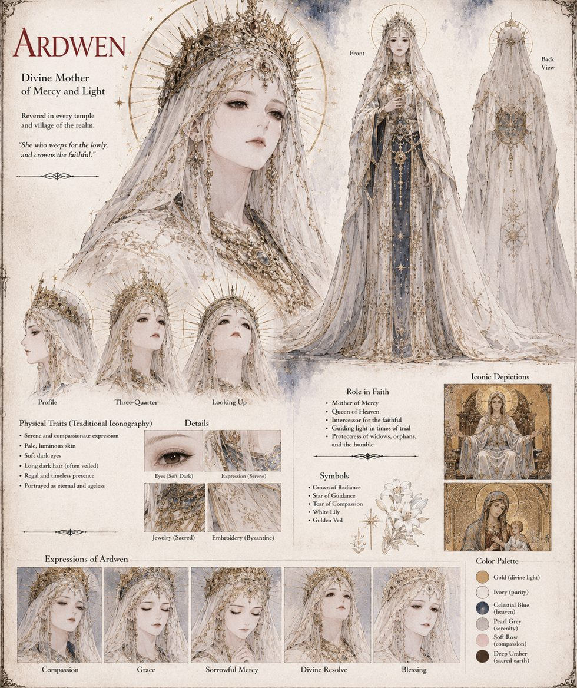

Ardwen
The Unhastening · the Sky-Answered · goddess of the Vigil of Ardwen
The one goddess of the Vigil of Ardwen, without rival, consort or child: the Unhastening, the Sky-Answered. Her teaching comes down to a handful of difficult habits — wait rather than demand, ask honestly rather than well, keep a promise past the point where anyone remains to collect, and keep one's accounts truthful even when the truth is the entry that refuses to balance. Its oldest maxim holds that Ardwen answers the honest, but never on command.
In Charsianon she is kept in a plain House of Vigil of stone and candles with no image in it, and her doctrine is quoted at the characters' lowest moments: Symeon's Return, Loukas's half-prayer at the block. The sheet draws her in traditional iconography, a veiled, crowned figure with a tear and a white lily, as the Mother of Mercy, intercessor for the faithful and protectress of widows, orphans and the humble. The same goddess is Ardwen in Case 0000.
“She who weeps for the lowly, and crowns the faithful.”